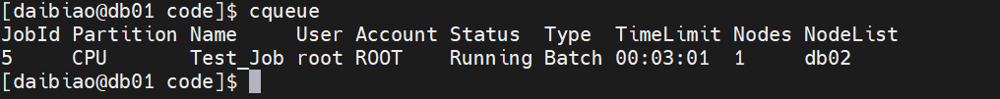
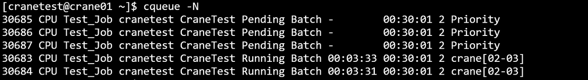
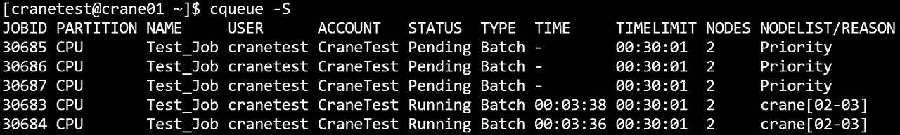
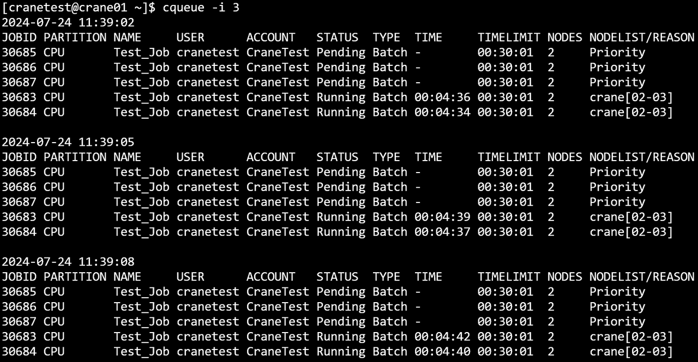
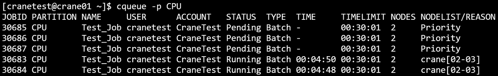
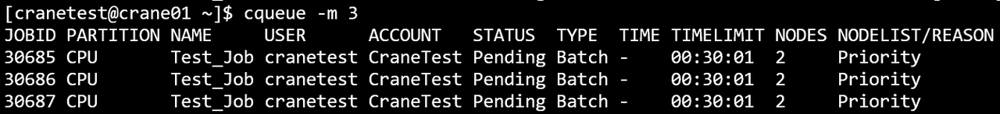
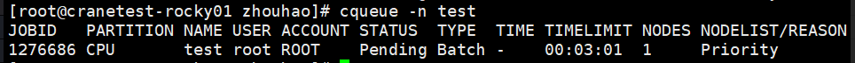
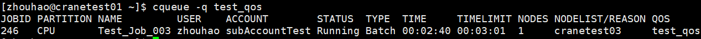
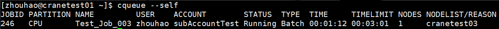

cqueue 查看作业队列
cqueue可以查看队列中的作业信息。
查看集群中所有队列的作业信息（包括状态pending、running、cancelled），默认输出100条信息。
cqueue
cqueue运行结果展示

主要输出项
- JobId：作业号
- Partition：作业所在分区
- Name：作业名
- User：作业所属用户
- Account：作业所属账户
- Status：作业状态
- Type： 作业类型
- TimeLimit：作业时间限制
- Nodes：作业所分配节点数
- NodeList：作业运行的节点名
主要参数
- -A/--Account string：指定查询作业所属账户，指定多个账户时用逗号隔开
- -C/--config string：配置文件路径
- -o/--format string: 以指定格式输出结果表，可以指定输出指定列以及列宽
- -F/--full: 显示完整的内容，如果未指定，默认每项输出30个字符
- -h/--help: 显示帮助
- -i/--iterate uint：指定间隔秒数刷新查询结果。如 -i=3表示每隔三秒输出一次查询结果
- -j/--job string: 指定查询作业号，指定多个作业号时用逗号隔开。如 -j=2,3,4
- --json: json格式输出命令执行结果
- -m/--MaxVisibleLines uint32：指定输出结果的最大条数。如-m=500表示最多输出500行查询结果
- -n/--name string：指定查询作业名，指定多个作业名时用逗号隔开
- -N/--noHeader：输出隐藏表头
- -p/--partition string：指定查询作业所在分区，指定多个分区时用逗号隔开
- -q/--qos string：指定查询作业的QoS，指定多个QoS时用逗号隔开
- --self：查看当前用户提交的作业
- -S/--start：显示作业的开始时间（pending作业显示预期开始时间）
- -t/--state string：指定查询作业状态，指定多个状态时用逗号隔开
- -u/--user：指定查询作业所属用户，指定多个用户时用逗号隔开
- /--version：查询版本号
- 例
cqueue -h
cqueue -N
cqueue -Scqueue -j 30674,30675
cqueue -t Pending
cqueue -t r
cqueue -u cranetest
cqueue -A CraneTest
cqueue -i 3
cqueue -p CPU
cqueue -m 3cqueue -o="%n %u %.5j %.5t %.3T %.5T"
- format中的指定列的对应缩写对照：
- j-TaskId；n-Name；t-State；p-Partition；u-User；a-Account；T-Type；I-NodeIndex；l-TimeLimit；N-Nodes
cqueue -n testcqueue -N
cqueue -q test_qos
cqueue --selfcqueue -t Running -S 2024-01-02T15:04:05~2024-01-11T11:12:41
- j-TaskId；n-Name；t-State；p-Partition；u-User；a-Account；T-Type；I-NodeIndex；l-TimeLimit；N-Nodes
- 例